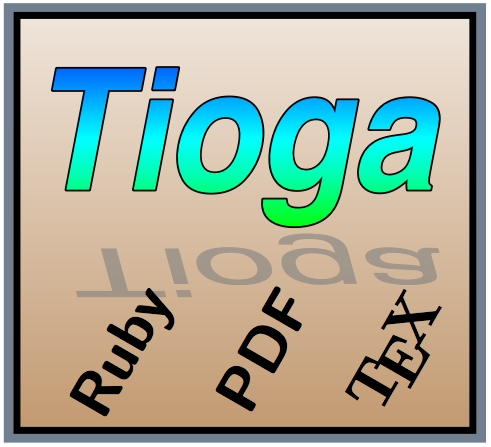
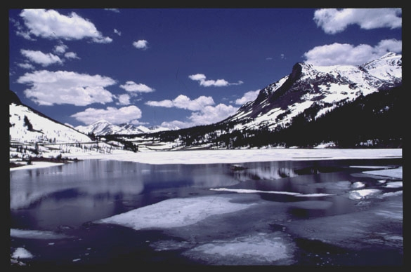

module TiogaDoc
Copyright (C) 2005, 2006, 2007 Bill Paxton This file is part of Tioga. Tioga is free software; you can redistribute it and/or modify it under the terms of the GNU General Library Public License as published by the Free Software Foundation; either version 2 of the License, or (at your option any later version. Tioga is distributed in the hope that it will be useful, but WITHOUT ANY WARRANTY; without even the implied warranty of MERCHANTABILITY or FITNESS FOR A PARTICULAR PURPOSE. See the GNU Library General Public License for more details. You should have received a copy of the GNU Library General Public License along with Tioga; if not, write to the Free Software Foundation, Inc., 59 Temple Place, Suite 330, Boston, MA 02111-1307 USA
Tioga¶ ↑

Tioga is a program for creating figures and plots using Ruby, PDF, and TeX.
It was originally designed, implemented, and documented by Bill Paxton. Vincent Fourmond has also been an active developer of Tioga for sometime now.
The tioga kernel is a Ruby extension providing a set of classes and modules for producing output with graphics using PDF functionality (including Bezier curves, clipping, images, shading, and transparency), and with text typesetting using the full abilities of TeX (well, actually, LaTeX).
You write Ruby programs for specifying the content of the figures and plots, and tioga puts the graphics into a PDF file and the text into a TeX file. These get combined when you include the figure or plot in a TeX document by placing the graphics in a box first and then adding a layer with the text on top of the graphics.
The Tutorial will get you started, and the FigureMaker reference material will keep you going.
For your first visit, you should read on to see about licenses, credits, etc.
Open Source Licenses¶ ↑
Tioga is free software. Source code for the kernel is available at the website under the terms of the GNU Lesser General Library Public License.
The tioga documentation is also freely available, both in this on-line form, and for downloading (from my website), copying, and redistribution, under the terms of the GNU Free Documentation License.
Copyright (c) 2005, 2006 Bill Paxton. Permission is granted to copy, distribute and/or modify this document under the terms of the GNU Free Documentation License, Version 1.2 or any later version published by the Free Software Foundation; with no Invariant Sections, no Front-Cover Texts, and no Back-Cover Texts. A copy of the license is included in the section entitled "GNU Free Documentation License".
All the example code in the documentation is freely available under the same terms as the tioga source code (GNU General Public License). Please copy, modify, and use the examples in any way that you find useful.
What does “tioga” stand for anyway?¶ ↑
The name “tioga” is not an acronym. It is the name of a beautiful, high mountain pass at the east entrance to Yosemite National Park in California (elevation 9,945 feet, 3,031 meters; location N 37.91, W 119.26). “Tioga” is actually a term used by the Mohawk Tribe of the Iroquois Confederation in New York and Pennsylvania. It means literally “where it forks”, perhaps a prescient reference to the split sending graphics to PDF and text to TeX.

With special thanks to:¶ ↑
Lars Bildsten and his group at UCSB for being my inspiration for doing this project.
Piet Hut for introducing me to Ruby and being enthousiastic about my efforts.
The Adobe team for making it all possible (Chuck and John, especially).
The NeXT team for doing wonders with Display PostScript.
Steve Jobs for taking Apple to the “next step” of greatness.
Apple for Mac OS X and all the excellent on-line documentation.
Don Knuth and all the others who've made TeX so neat.
Han The Thanh, Petr Sojka, and Jiri Zlatuska for pdfTeX which combines the best and the best.
Yukihiro Matsumoto for Ruby which has become my language-of-choice.
Dave Thomas for his “must have” book, Programming Ruby.
Michael Beam for his articles on Cocoa.
Simson Garfinkel & Michael Mahoney for their book, Building Cocoa Applications.
Aaron Hillegass for his book, Cocoa Programming for Mac OS X.
Alan Irwin and the rest of the PLPLOT team for support and code.
Joao Cardoso whose pstex driver for PLPLOT gave me the idea for PDF and TeX.
Jean-loup Gailly and Mark Adler for zlib and Flate.
The TeXShop implementors for providing a model and a tool.
Dan Kelley for Gri and the wonderful contour following algorithm it provides.
KITP and UCSB for giving me a place to play.
My wife, Kathlyn, for being patient as I ranted and raved my way to completion.